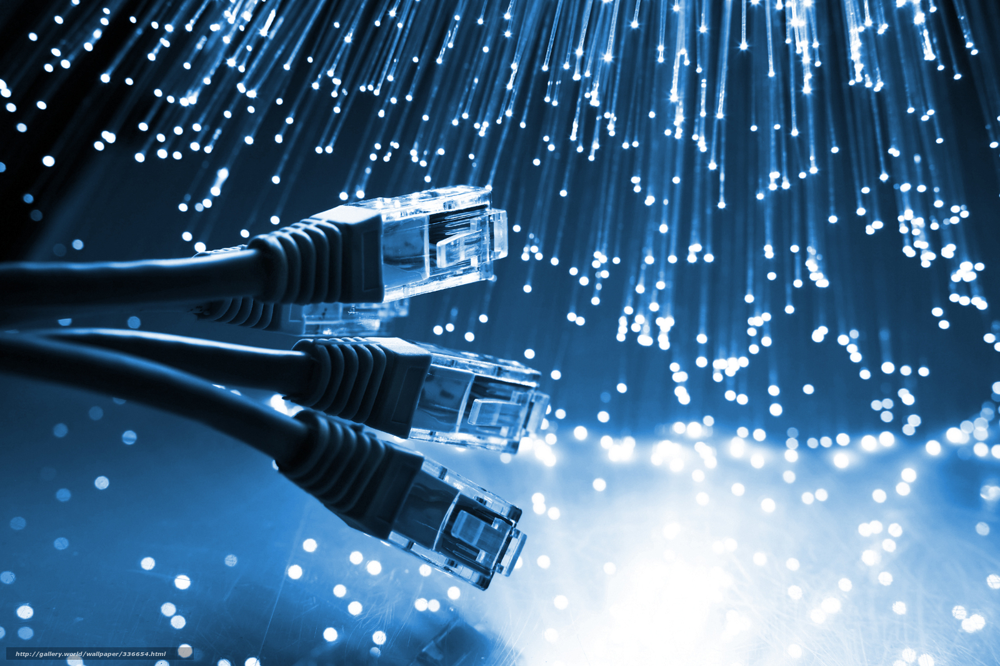
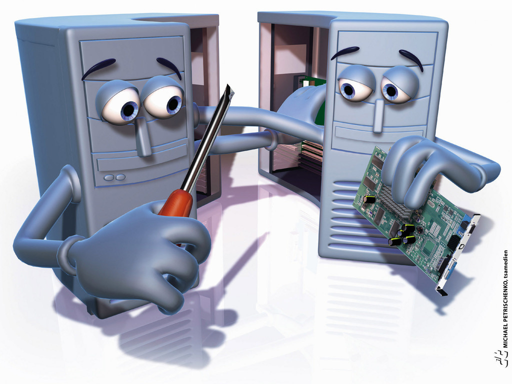

Trabalho
Informatica
Informática é um termo usado para descrever
o conjunto das ciências relacionadas ao armazenamento,
transmissão e processamento de informações em meios digitais,
estando incluídas neste grupo: a ciência da computação,
a teoria da informação, o processo de cálculo,
a análise numérica e os métodos teóricos da
representação dos conhecimentos e da modelagem dos
problemas. Mas também a informática pode ser entendida
como ciência que estuda o conjunto de informações e
conhecimentos por meios digitais.
Redes
Uma Rede de computadores é formada por um
conjunto de máquinas eletrônicas com processadores
capazes de trocar informações e compartilhar recursos,
interligados por um sub-sistema de comunicação, ou seja,
é quando há pelo menos dois ou mais computadores,
e outros dispositivos interligados entre si de modo
a poderem compartilhar recursos físicos e lógicos,
estes podem ser do tipo: dados, impressoras,
mensagens (e-mails), entre outros.
Uma rede de computadores ou rede de dados é
uma rede de telecomunicações digital que permite
que compartilhemos recursos. Em uma rede de computadores,
os dispositivos de computação em rede trocam
dados entre si usando um link de dados.
As conexões podem ser estabelecidas usando
mídia de cabo ou mídia sem fio.

montagem e manutenção
Chama-se manutenção preventiva a ação ocorrida
com base na análise prévia do computador,
de seu funcionamento e execução, relacionado
à CPU e todos os periféricos, entendendo e
aplicando-se acções que visem evitar que determinados
erros (de software e/ou hardware) ocorram.
Existem softwares que são utilizados na
manutenção preventiva.

Administração
Hospitalar
Na segunda metade da década de 1980, eu tive o
privilégio de atuar numa organização hospitalar, por mais
de quatro anos, na função de Chefe do Setor de Logística e
Finanças, ocasião em que me possibilitou constatar quão complexo
é gerenciar esse tipo de organização, sobretudo em face de
sua atipicidade. Essa experiência, aliada aos meus conhecimentos profissionais
Publica